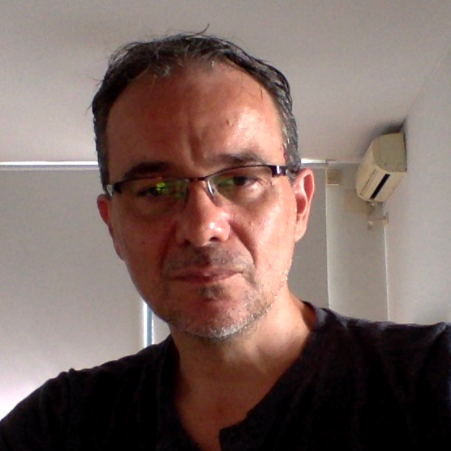

Información Personal

Hola, soy Fernando Russo. Diseñador Gráfico. Un profesional con una trayectoria de veinte años realizando imagen gráfica, multimedia y comunicación publicitaria. Paralelamente a la profesión que ejerzo en mi estudio, durante el mismo tiempo, capacito en diseño y computación gráfica en distintas instituciones educativas, empresas y cursos particulares de Photoshop, Illustrator, Acrobat Pro. Etc.
La investigación, ejercitación y lectura profesional la llevo a cabo constantemente combinando otras áreas de interés aprendidas como arte, sonido y música, actividades que realicé previa y paralelamente a la formación profesional, creando distintas experiencias multimedia. En el año 2011 realicé el primer examen internacional de certificación técnica de Adobe®, siendo actualmente Adobe Certified Expert en Acrobat XI Pro.
Idiomas
- Español: Idioma Nativo. Lectura y Escritura
- Inglés: Nivel Intermedio - Lectura Técnica Avanzada
- Italiano: Lectura - Comprensión conversacional